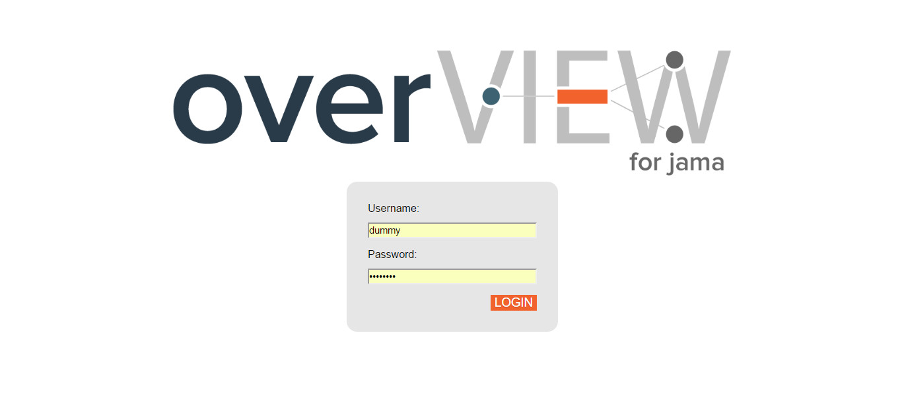
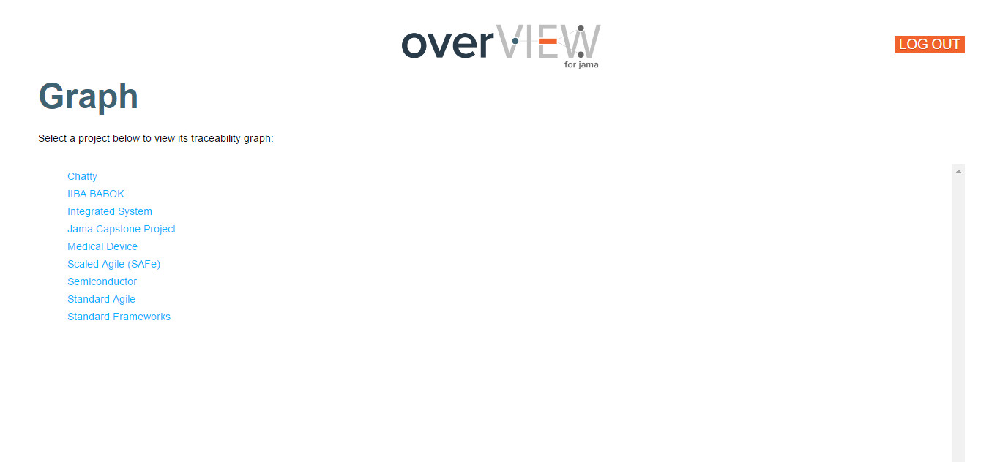
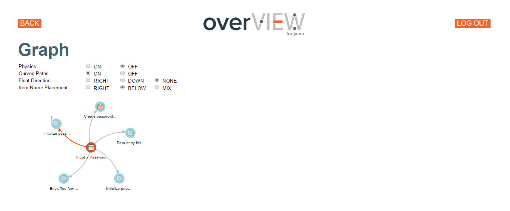
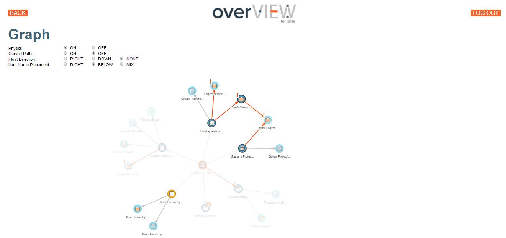
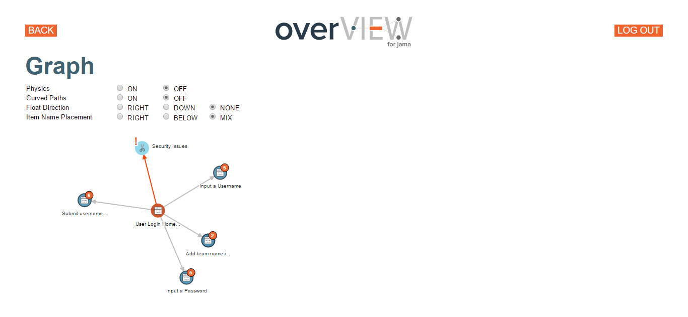
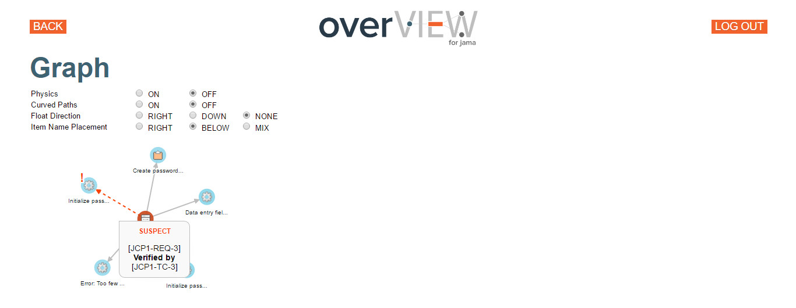
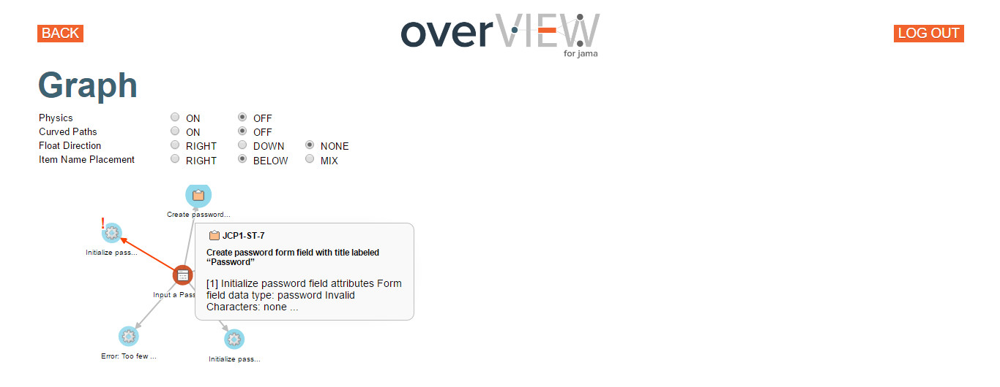

overView Login Page

overView Project Selection

overView Root Item Selection

Simple overView Graph with Curved Edges
Simple overView Graph with Straight Edges

Complex overView Graph with Highlighted Segments

Complex overView Graph with Collapsed Nodes

Simple Graph with Hovered Suspect Edge Tooltip
